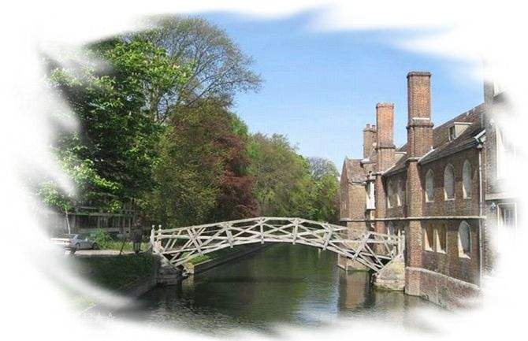

《再别康桥》是现代诗人徐志摩脍炙人口的诗篇，是新月派诗歌的代表作品。全诗以离别康桥时感情起伏为线索，抒发了对康桥依依惜别的深情。语言轻盈柔和，形式精巧圆熟，诗人用虚实相间的手法，描绘了一幅幅流动的画面，构成了一处处美妙的意境，细致入微地将诗人对康桥的爱恋，对往昔生活的憧憬，对眼前的无可奈何的离愁，表现得真挚、浓郁、隽永，是徐志摩诗作中的绝唱。《再别康桥》是一首写景的抒情诗，其抒发的情感有三：留恋之情，惜别之情和理想幻灭后的感伤之情。 “轻轻的我走了，正如我轻轻的来，我轻轻的招手，作别西天的云彩。”这节诗可用几句话来概括：舒缓的节奏，轻盈的动作，缠绵的情意，同时又怀着淡淡的哀愁。最后的“西天的云彩”，为后面的描写布下了一笔绚丽的色彩，整个景色都是在夕阳映照下的景物。所以这节诗为整首诗定下了一个基调。 “那河畔的金柳，是夕阳下的新娘，波光里的艳影，在我心头荡漾。”这节诗实写的是康河的美，同时，柳树在古诗里“柳”——“留”，留别有惜别的含义，它给诗人留下了深刻的印象，多少的牵挂用“在我心头荡漾”，把牵挂表现得非常形象。他运用的手法是比拟（拟人、拟物）。这节与第三节诗联系紧密：“软泥上的青荇，油油的在水底招摇；在康桥的柔波里，我甘做一条水草。”第三节诗突出了康河的明静和自由自在的状况，自由、美正是徐志摩所追求的。同时表现一种爱心，那水草好像在欢迎着诗人的到来。还有，它并没有完全脱离中国诗歌的意境，它和中国的古诗有相同的地方，就是物我合一。第二节是化客为主，第三节是移主为客，做到两相交融，物我难忘。这两句诗正好表现出徐志摩和康桥的密切关系。这就是所谓的：确定了理想，步入了诗坛，美妙的风光中，抒发自己的情感。三者是紧密地联系在一起的，通过具体的形象，来表达自己的感情。